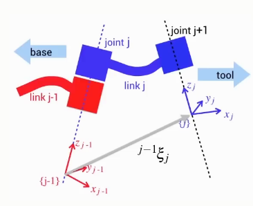
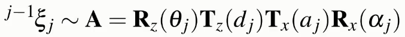
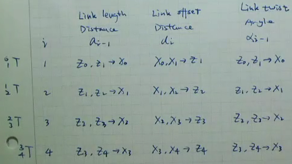

A general theory to describe an articulated sequence of joints.
Each joint in the robot is described by four parameters.
Denavit-Hartenberg notation describes the relationship between 3D coordinate frames attached to two successive links with four parameters.
For a robot with N joints the links are numbered from 0 to N, where link 0 is the fixed base of the robot.
A coordinate frame is attached to the far (distal) end of every link (closest to the end-effector)
The pose of a link frame is described with respect to the previous link frame
Four parameters: \(\theta, d, a, \alpha\)
 
There are constraints when using Denavit-Hartenberg notation:
Axis \(x_j\) intersects axis \(z_(j-1)\)
Axis \(x_j\) is perpendicular to axis \(z_(j-1)\)
6 parameters - 2 constraints = 4 parameters
Note that because of these constraints, a link coordinate frame may not necessarily lie on the physical robot.
The axis of each joint is defined by the z-axis of a coordinate frame
The joint rotates about the z-axis (revoltue joint), or
The joint translates along the z-axis (prismatic joint)
A table is used to represent each of the DH parameters for each joint.
A good way to remember how to find each of the parameters is to use the following table.
